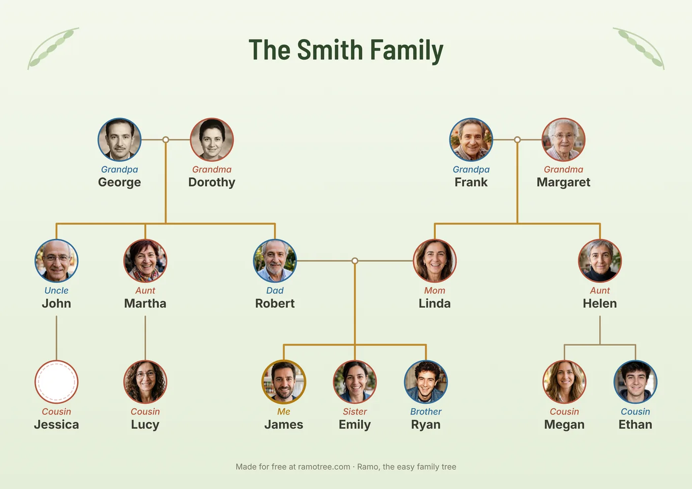

How to make a family tree, step by step
Making your family tree is easier than it looks: start with what you already know, ask the older generation while you can, and fill it in bit by bit. Here are the steps and a free template to print.
Want to start right away? Make your tree right here: add your grandparents, parents, aunts, uncles, cousins and siblings, with photos if you like, and download it as a PDF or image.

1. Start with yourself
Write down your name and when and where you were born. Then your parents and siblings, and then your grandparents. Put down everything you know by heart, even if it's incomplete: an approximate date (“about 1930”) is better than a blank.
2. Ask your family
Older relatives are the best source, and what isn't asked in time gets lost. Some questions that work well:
- What were your parents' and grandparents' full names, including maiden names?
- Where and when were they born? Who did they marry, and where?
- How many brothers and sisters did they have? What happened to them?
- What did they do for a living? Where did they live?
- Do you have photos, letters or keepsakes from back then?
Bring the photo album: faces help people remember. Take pictures of old photos with your phone and, if they agree, record the conversation.
3. Look for the missing details
There is often more at home than you think: birth and marriage certificates, family Bibles, funeral cards and photos with something written on the back. Beyond that, look at civil registration (births, marriages and deaths), census records and church records. FamilySearch, which is free, has millions of old records already scanned.
Note where each fact comes from. When two sources disagree, you'll know which one to trust.
4. Organize it: on paper or on your phone
A paper tree is great to start with. But the tree grows fast (siblings, aunts and uncles, cousins, partners…) and paper runs out of room. With Ramo you add each relative by tapping their card and the app lays everything out for you, with photos, approximate dates and everyone's relationship. No account needed, and if you already have a tree from another program, Ramo opens GEDCOM files.
5. Share it with the family
Send the tree as a PDF to the family group: everyone can fill in their branch with Ramo, free, and send it back, and Ramo merges the versions without duplicating anyone. When it's complete, print it large or give it framed.
Frequently asked questions
Where do I start a family tree?
Where can I find information about my great-grandparents?
How many generations should it have?
More guides